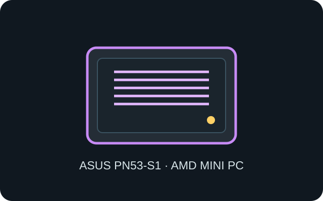

[ IDENTIFIED SYSTEM // ASUS AMD MINI PC ]
ASUS ExpertCenter PN53-S1
115 × 115 × 49 mm (W × D × H), approximately 0.55 kg; AMD barebone enclosure with revision- and bundle-dependent board options.

MODEL TYPE: ExpertCenter PN53-S1; retain the S1 suffix and installed AMD system-board revision in service records.
Specifications & fit
| Dimensions / type | 115 × 115 × 49 mm (W × D × H), low-volume mini-PC enclosure. |
|---|---|
| Board / power | ASUS proprietary AMD mobile system board; external 19 V, 90 W adapter. It does not accept desktop CPU coolers, ATX PSU or PCIe cards. |
| Drive bays | One M.2 2280 SSD socket and one 2.5-inch SATA drive position, with up-to-7-mm height limit reported for the bay; verify the specific PN53-S1 drive carrier. |
| Expansion | No PCIe card slot. Two SO-DIMM positions, M.2 storage and WLAN connectors are internal expansion; optional rear I/O module is externally configurable. |
| Thermal / maintenance compatibility | Active cooling uses a compact fan and fin stack; keep intake and exhaust clear. Unplug adapter before opening, track the drive cradle and screws, and do not pinch the antenna leads while reinstalling the cover. |
Compatibility & preservation notes
PN53-S1 is a factory-engineered system and not a generic case. Verify the exact retail suffix, board and power adapter against ASUS support before swapping cooling or storage parts.
- The 2.5-inch bracket and SATA lead occupy the designed lid area; use only the documented drive thickness and screw points.
- Clear dust from the heatsink fins and verify fan operation after service to maintain processor cooling.
Manufacturer specifications & service sources
- ASUS — ExpertCenter PN53-S1 technical specificationsManufacturer model specifications, dimensions and storage options.
- ASUS Support — ExpertCenter PN53-S1 manualsManufacturer manual library for storage installation and system servicing.